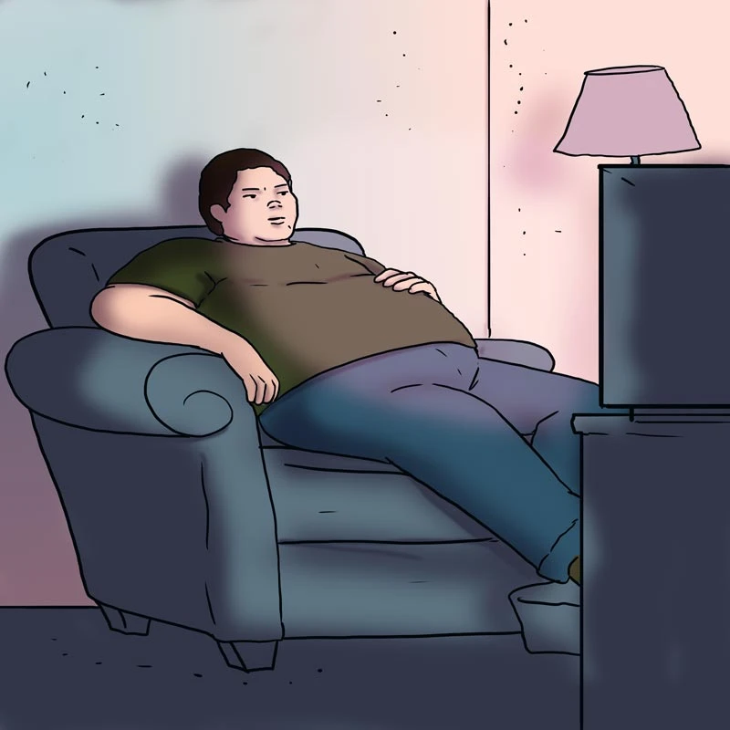

Comportamientos sedentarios

Los comportamientos sedentarios se refieren a aquellos que se realizan en estado de vigilia caracterizado por un mínimo o nulo gasto de energía en posición sentada, reclinada o acostada. La mayoría de los trabajos de oficina, conducir y ver la televisión son ejemplos de comportamientos sedentarios. También se dan en las personas que no pueden ponerse de pie, como quienes van en silla de ruedas. La definición de comportamiento sedentario utilizada por la OMS incluye el tiempo que se pasa sentado con escaso movimiento (tiempo de ocio, ocupacional y total), el tiempo empleado en la televisión (tiempo frente a la televisión o tiempo frente pantalla) y un nivel escaso de movimiento (OMS, 2020).
La OMS también ha emitido recomendaciones sobre los comportamientos sedentarios, pero aún no ha establecido cuánto tiempo frente pantalla es un riesgo para la salud, ya que aún se sigue realizando investigación al respecto. Sin embargo, en las guías de actividad física y comportamientos sedentarios en países como Canadá y Australia ya se estableció como límite dos horas frente pantalla al día. En México el 25% de la población adolescente excede el tiempo sentado y casi el 90% excede dos horas de tiempo frente pantalla al día.
Recomendaciones de la OMS respecto a actividad física para niños y adolescentes en la vida cotidiana
(Organización Mundial de la Salud, 2020)

El dedicar mucho tiempo al día en comportamientos sedentarios aumenta el riesgo de enfermedad cardiovascular, cáncer e incluso la muerte. La relación entre tiempo sentado y riesgo de muerte no era igual para todas las personas, el nivel de actividad física modifica considerablemente esta relación. Las personas que realizaban mayores cantidades de actividad física presentan un riesgo menor de muerte, incluso cuando pasan bastante tiempo sentadas. En las personas con niveles bajos de actividad física, pasar mucho tiempo sentado se relacionó con un mayor riesgo de muerte. Esto significa que:
Mucho tiempo sentado + poca actividad física = mayor riesgo
Por el contrario:
Mucho tiempo sentado + niveles elevados de actividad física = riesgo considerablemente menor
Las personas que permanecen sentadas durante 8 horas o más al día pueden presentar un riesgo de muerte similar al de aquellas que permanecían sentadas menos tiempo si realizan suficiente actividad física. También se sabe hasta la fecha que existe una asociación entre tiempo prolongado frente pantalla y mayor riesgo de mortalidad, particularmente entre quienes tienen niveles bajos de actividad física. Por lo tanto, estar sentado durante mucho tiempo no es lo mismo que ser físicamente inactivo. Una persona puede realizar actividad física y, aun así, pasar muchas horas sentada. Por eso es importante pensar en todo el día:
Movernos más + reducir periodos prolongados de estar sentado
Si deseas saber más sobre los riesgos del tiempo sentado ver https://youtu.be/wUEl8KrMz14?si=eL2XQGPlY1bV9C_a
Comportamiento sedentario en la escuela
Si eres estudiante, algunas rutinas podrían estar dañando tu salud. Pro ejemplo, si pasas mucho tiempo sentado/a durante la jornada escolar, realizando tareas sentado/a, transportándote sentado/a o dedicando mucho tiempo o más de dos horas frente pantalla. Por lo tanto, es importante estar consciente de estos riesgos y tomar medidas de autocuidado.
63 % de la jornada escolar se pasa en comportamiento sedentario entre niñas, niños y adolescentes.
40 % del total del comportamiento sedentario entre semana en escolares se deriva de la escuela.
Actividad
Ve este video y responde a las siguientes preguntas: https://portalacademico.cch.unam.mx/recursos-de-apoyo/video-educativo/serie-comportamientos-sedentarios
¿Cómo reducir los comportamientos sedentarios?
Existen muchas formas como interrumpir el tiempo sentado/a con frecuencia, poner límites de tiempo al uso de dispositivos electrónicos, pasar más tiempo aire libre y caminar a lo largo del día. En el año 2025 un estudio científico se cuestionó la idea de que 10,000 pasos diarios sea un objetivo universal basado directamente en evidencia científica.
Los resultados mostraron que alrededor de 7,000 pasos puede ser un objetivo más realista para muchas personas, al mismo tiempo que se asocia con importantes beneficios para la salud. Esto no significa que caminar más de 7,000 pasos sea perjudicial o inútil. Para algunos resultados, los beneficios continuaron aumentando con más pasos, aunque con incrementos menores. De acuerdo con el estudio, aproximadamente 7 000 pasos diarios se asociaron con:
De acuerdo con el estudio, aproximadamente 7 000 pasos diarios se asociaron con:
47%
menos riesgo de mortalidad por cualquier causa
25%
menos riesgo de enfermedad cardiovascular
37%
menos riesgo de mortalidad por cáncer
14%
menos riesgo de diabetes tipo 2
38%
menor riesgo de demencia
28%
menor riesgo de presentar síntomas depresivos
Por lo tanto ¡Cada paso cuenta! puedes aumentar tu movimiento mediante actividades cotidianas como:
Caminar hacia o desde tu escuela.
Subir escaleras.
Caminar durante algunos trayectos.
Salir a caminar.
Participar en actividades deportivas en tu escuela.
Participar en actividades culturales que incluyan movimiento (K-pop, danza aérea)
Aprovechar los espacios de la escuela y la comunidad para moverte.
Ponerte de pie durante las clases.